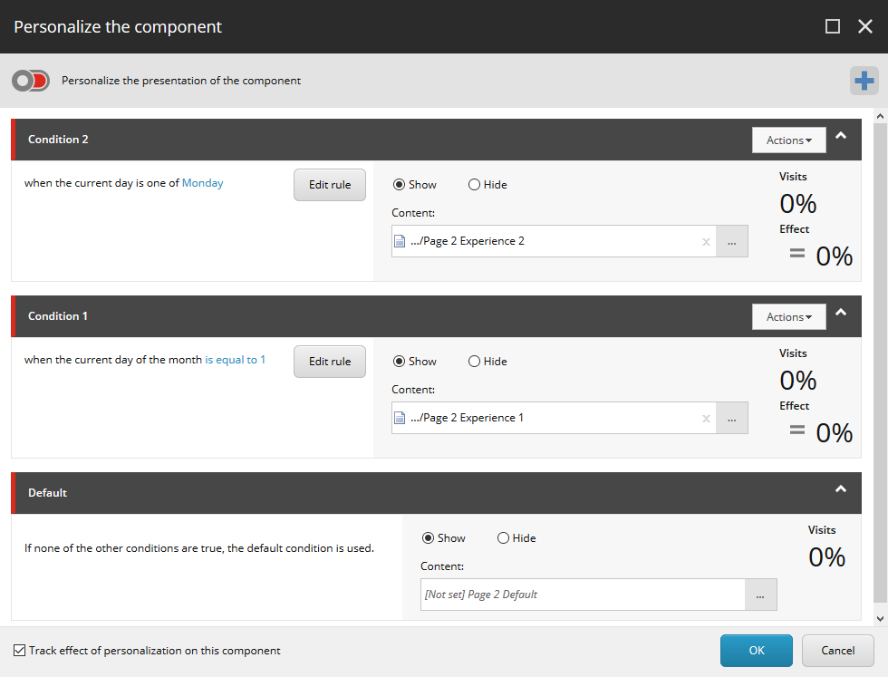

パーソナライゼーションテスト¶
コンポーネントのバリアントにパーソナライズルールを適用した後、パーソナライズの効果をテストすることができます。デフォルトでは、Sitecore のすべてのテストは Subgroup Round Robin Sticky テスト戦略を使用します。このトピックでは、コンタクトがサイトを訪問したときに何を見るかを理解できるように、パーソナライズテストとデフォルトのテスト戦略がどのように機能するかを説明します。
コンテンツが特定のグループに与える影響を評価する¶
特定のターゲットグループに対する新しいコンテンツの効果を評価するには、同じターゲットグループに対するデフォルトのコンテンツの効果と比較する必要があります。
単純なA/Bコンテンツテストでは、コンタクトの半分がオリジナルコンテンツを、半分が新バージョンを見ています。
パーソナライゼーションテストでは
パーソナライゼーションの基準を満たしていないすべてのコンタクトは、オリジナルのコンテンツを見ます。
パーソナライゼーションルールの基準を満たしているコンタクトのうち、半数が新しいバージョンを、半数がオリジナルコンテンツを見ます。
1つのパーソナライゼーション条件を持つテストの例¶
テストするページには、オリジナル（デフォルト）のバージョンと、「現在の日が日曜日の場合」という条件付きのバージョンの2つのバージョンがあります。
月曜日から土曜日にサイトを訪問したすべてのコンタクトは、デフォルトバージョンのバリアントを見ます。
日曜日にサイトを訪問した連絡先の半分はパーソナライズされたバージョンのコンテンツを見て、残りの半分はデフォルトバージョンを見ています。
複数のパーソナライズ条件をテストする¶
パーソナライゼーションテストは、同じコンポーネントに適用される複数の条件を含むことができる。その場合、ラウンドロビン戦略は、コンタクトのグループに適用されるすべての条件が、そのグループに対して等しい頻度で提示されることを確実にするために使用される。
複数の条件を設定したパーソナライゼーションテストの例¶
以下の表では、デフォルトの条件の他に2つの条件を持つパーソナライズされたコンポーネントについて説明します。
条件名 |
ルール |
エクスペリエンス |
Condition 2 |
現在の日が月曜日の場合 |
Experience 2 |
Condition 1 |
その月の現在の日が1になった場合 |
Experience 1 |
Default |
常に適用されます。 |
Default |
コンポーネントの個人設定ダイアログでは、条件は次のようになっています。
{kind=link}
ウェブサイトを訪問した連絡先は、どの条件を満たしているかによって、4つのグループのいずれかに属する。以下の表は、4つのグループを示しており、各グループにどのような体験を提供するかを説明しています。
グループ |
概要 |
マッチング条件 |
グループからの訪問者に示されたエクスペリエンス |
Group 1 |
月曜ではない日に訪問する訪問者は |
Condition 2 = False Condition 1 = False Default = True |
このグループのすべての訪問者は、デフォルトの |
Group 2 |
日が月曜日の時に訪問する訪問者は |
Condition 2 = True Condition 1 = False Default = True |
Contact 1 - Experience 2 Contact 2 - Default Contact 3 - Experience 2 Contact 4 - Default Contact 5 - Experience 2 |
Group 3 |
月曜ではない日に訪問する訪問者は |
Condition 2 = False Condition 1 = True Default = True |
Contact 1 - Experience 1 Contact 2 - Default Contact 3 - Experience 1 Contact 4 - Default Contact 5 - Experience 1 |
Group 4 |
月曜になるとサイトを訪問してくれる訪問者と |
Condition 2 = True Condition 1 = True Default = True |
Contact 1 - Experience 2 Contact 2 - Experience 1 Contact 3 - Default Contact 4 - Experience 2 Contact 5 - Experience 1 |
表に示すように、各グループのコンタクトは、デフォルトの経験を含めて、そのグループに適用される経験を参照しています。例えば、グループ4は、月の1日にサイトを訪問するコンタクトで構成されています。これらのコンタクトは条件1と条件2の両方を満たしているので、これらのコンタクトの3分の1は経験1を、3分の1は経験2を、3分の1はデフォルトの経験を見ています。
複数のパーソナライズされたコンポーネントでページをテストする¶
パーソナライズ条件を持つ複数のコンポーネントを含むページで、パーソナライズ テストを実行できます。デフォルトの条件を含め、連絡先のグループに適用されるすべての条件は、そのグループに対して同じ頻度で提示されます。
たとえば、デフォルトに加えて 2 つの条件を持つ 2 つのコンポーネントがある場合、合計 9 つの経験があります。テストの経験数が多いほど、結果が統計的に有意/妥当であるためには、テストを実行するために必要なコンタクトのサンプルが大きくなります。
すでにテスト済みのパーソナライゼーションルールでコンポーネントをテストする¶
すでにテスト済みのルールが1つ以上あるコンポーネントに、新しいパーソナライズルールを追加したい場合があります。すでにテストされたルールは、再度テストされることはありません。コンタクトがすでにテストされたエクスペリエンスを表示すると、そのコンタクトがデフォルトの状態を表示したかのように、テストはその訪問をカウントします。